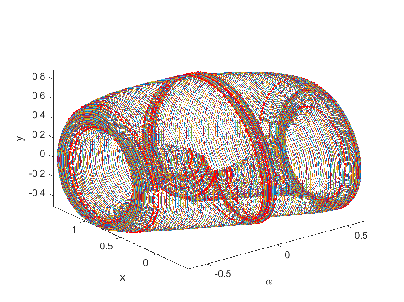

Next:
Contents
Contents
MATCONT:
Continuation toolbox for ODEs
in Matlab
W. Govaerts, Yu. A. Kuznetsov, H.G.E. Meijer,
B. Al-Hdaibat, V. De Witte, A. Dhooge, W. Mestrom, N. Neirynck, A.M. Riet and B. Sautois
August 2019, adapted for version MatCont 7.1.

Belgium
Utrecht University
The Netherlands
The Netherlands
Contents
Mathematical aspects of numerical continuation and handling of singularities
Prediction
Correction
Pseudo-arclength continuation
Moore-Penrose continuation
Stepsize control
Singularity handling
Test functions
Multiple test functions
Singularity matrix
User location
General software aspects of MatCont
System definition
Continuation and output
Curve file
Options
The options-structure
Derivatives of the defining system of the curve
Singularities and test functions
Locators
User functions
Defaultprocessor
Special processors
Workspace
Adaptation
Tangent search order
Summary
Failure handling
General remarks on the data flow
Directories
Global Structures
Plots in M
AT
C
ONT
The odefile of a dynamical system
Structure and construction of an odefile
Handling auxiliary functions in the construction of the odefile
Access to function and Jacobian values
Time integration using the odefile
Time integration and Poincaré maps
Time integration
Solver output properties
Jacobian matrices
The Steinmetz-Larter example
Poincaré section and Poincaré map
Poincaré maps in C
L/SMALL>_M
AT
C
ONT
Equilibrium continuation
Mathematical definition
Initialization by time integration
Bifurcations and their normal form coefficients
Branch point locator
Equilibrium initialization
Bratu example
Continuation of limit cycles
Mathematical definition
Discretization of a limit cycle
Plotting the output of a continuation of limit cycles
Initialization by time integration
Bifurcations of limit cycles
Branch Point Locator
Normal form coefficients
Limitcycle initialization
Adaptive control example
The phase response curve
Continuation of codim 1 bifurcations
Fold Continuation
Mathematical definition
Bifurcations along a fold curve
Fold initialization
Adaptation
Example: a catalytic oscillator
Hopf Continuation
Mathematical definition
Bifurcations along a Hopf curve
Hopf initialization
Adaptation
Example
Period Doubling
Mathematical definition
Output of a continuation of period doubling bifurcation points
Bifurcations along a flip curve
Period doubling initialization
Example
Continuation of fold bifurcation of limit cycles
Mathematical definition
Bifurcations along a fold of cycles curve
Fold of cycles initialization
Example: the fast Morris-Lecar equations
Continuation of torus bifurcation of limit cycles
Mathematical definition
Bifurcations along a Neimark-Sacker curve
Torus bifurcation initialization
Example: an autonomous electronic circuit
Continuation of codim 2 bifurcations
Branch Point Continuation
Mathematical definition
Bifurcations
Branch Point initialization
Example
Branch Point of Cycles Continuation
Mathematical Definition
Bifurcations
Branch Point of Cycles initialization
Example
Continuation of homoclinic and heteroclinic orbits
Homoclinic orbits: Mathematical definition
Homoclinic-to-Hyperbolic-Saddle Orbits
Homoclinic-to-Saddle-Node Orbits
Bifurcations
Homoclinic initialization (HHS)
Homoclinic-to-Saddle-Node initialization (HSN)
CL_M
AT
C
ONT
: the MLFast example
Heteroclinic orbits (Het)
Continuer example: a curve object
The Brusselator example: Continuation of a solution to a boundary value problem in a free parameter
Bibliography
About this document ...